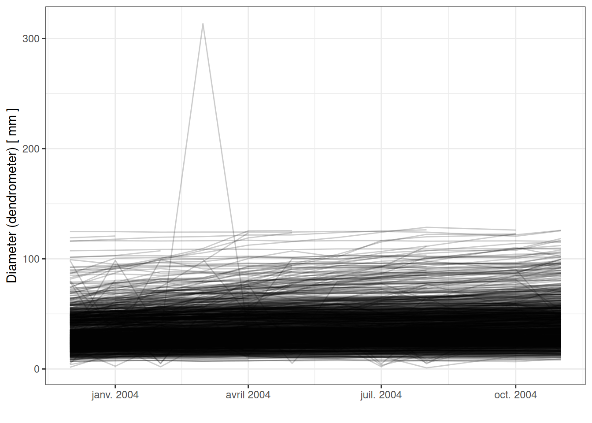

Code
read_csv("data/raw_data/CD15_Productivity_1167/data/CD15_Dendrometer_measurements_2003_2004.csv",
skip = 24, na = "-9999") %>%
rename_all(tolower) %>%
gather(date, dendrometer,
-plot, -subplot, -tree_no, -diameter, -comments) %>%
mutate(date = gsub("band_", "", date)) %>%
mutate(month = str_sub(date,1,2),
year = str_sub(date,3,6)) %>%
mutate(date = as_date(paste0(year, "-", month, "-01"))) %>%
select(-year, -month) %>%
ggplot(aes(date, dendrometer,
group = paste(plot, subplot, tree_no))) +
geom_line(alpha = .2) +
theme_bw() +
xlab("") +
ylab("Diameter (dendrometer) [ mm ]")